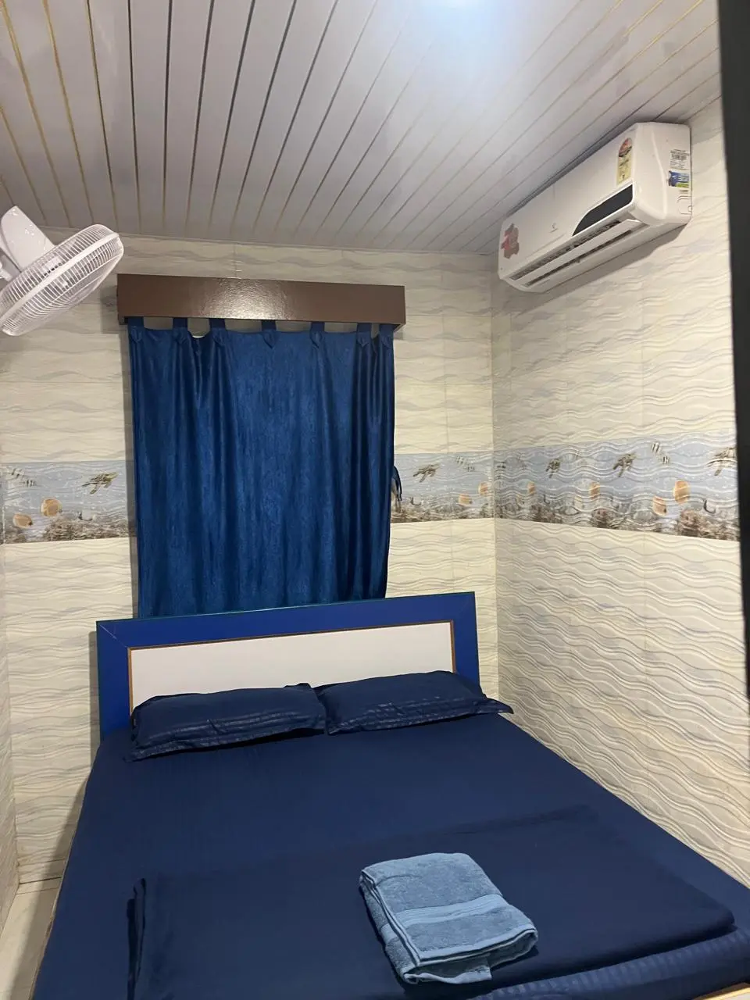

Scenic Beach Views
Kashid Beach is famous for its wide shoreline, white sand and beautiful coastal landscape.
Visitors often come here to relax, enjoy the sea breeze and take photographs of the surrounding scenery.
Kashid Beach is one of the most beautiful beaches near Alibaug. Known for its long stretch of white sand and clear blue water, the beach attracts travelers looking for scenic coastal views and relaxing weekend trips.
Located along the Konkan coastline of Maharashtra, Kashid Beach is popular among couples, photographers and visitors searching for a quieter beach atmosphere compared to crowded tourist spots.
Kashid Beach is located approximately 30 kilometers from Alibaug town along the scenic coastal highway toward Murud.
The beach can be reached easily by road and is often included in weekend itineraries for travelers visiting Alibaug and nearby beaches.
Kashid Beach is famous for its wide shoreline, white sand and beautiful coastal landscape.
Visitors often come here to relax, enjoy the sea breeze and take photographs of the surrounding scenery.

Sunset views at Kashid Beach are one of the most memorable experiences for visitors.
The long coastline provides perfect views of the evening sky reflecting over the sea.

Travelers visiting Kashid often stay at properties such as Prakruti Resort Kashid, Sea Esta Resort & Cafe and Kashid Heritage Beach Resort.
These stays keep visitors closer to the beach while still offering a mix of resort comfort, short-stay convenience and scenic coastal access.
Many visitors exploring Kashid Beach prefer staying as close to the shoreline as possible so they can enjoy early-morning beach walks and quieter evenings.
Prakruti Resort Kashid is one of the better-known stay options near Kashid Beach, while Sea Esta Resort & Cafe, Royal Villa Kashid and Kashid Boutique Resort are also commonly considered for short beach holidays in the area.
Yes. Kashid Beach is a popular destination for weekend travelers visiting the Alibaug region because of its scenic beauty and peaceful environment.
Nearby beaches include Nagaon Beach, Alibaug Beach and Murud Beach.